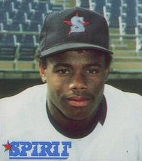

Early Life

Griffey was born in Donora, Pennsylvania, on November 21, 1969. His family moved to Cincinnati, Ohio, as his father, Ken Griffey Sr., made his MLB debut on August 25, 1973 for the Cincinnati Reds. Griffey Jr. was only three years old at the time. He was in the clubhouse during his father's back-to-back championships in the 1975 and 1976 World Series. When Griffey was a young child, his father instilled in him the pride of a team accomplishment rather than the individual performance: "My dad would have bopped me on the head when I was a kid if I came home bragging about what I did on the field. He only wanted to know what the team did." An incident during his father's tenure with the New York Yankees, where Griffey Jr. was told to leave the dugout while sitting with his father, while a white player's (Graig Nettles) son was allowed to practice on the field, would lead to Griffey Jr. refusing to contemplate signing with the Yankees during his career.Griffey attended Archbishop Moeller High School in Cincinnati, the same high school as his future teammate Barry Larkin, where he was the U.S. high school baseball player of the year in 1987. He hit .478 with 17 home runs in his two seasons of high school baseball. Griffey also played football as a wide receiver and received scholarship offers to play college football for such programs as Oklahoma and Michigan.
Professional Career
The Seattle Mariners selected Griffey with the first overall selection of the 1987 Major League Baseball draft, held on June 2, 1987. He received a signing bonus of $160,000.On June 11, 1987, Griffey joined the Bellingham Mariners of the Class A short season Northwest League. He made his professional debut on June 16 and hit his first professional home run the following day against the Everett Giants at Everett Memorial Stadium. A bronze plaque was installed at the approximate site of the ball's landing spot—387 feet (118 m) from home plate. In 54 games with Bellingham, he hit .313 with 14 home runs, 40 runs batted in (RBI), and 13 steals. Baseball America magazine named him the Northwest League's best prospect.
In 1988, Griffey joined the San Bernardino Spirit of the High-A California League. During his 58 games, Griffey batted .338, hit 11 home runs, drove in 42 runs, and stole 32 bases.Late in the season, Griffey was promoted to the Vermont Mariners of the Double-A Eastern League. He played the final 17 games with the club, hitting .279 with two home runs and 10 RBI. Griffey had a total of 129 games in his two seasons in the minor leagues, earning 103 total runs and 27 total home runs.
Seattle Mariners (1989 - 1999)
A mural of Griffey in downtown Seattle from the strike-shortened 1994 season. The tick-marks represent his home runs up to the time of the strike, when Griffey Jr. was chasing the single-season home run record set by Roger Maris in 1961. In his first 11 seasons with Seattle (1989–1999), Griffey established himself as one of the most prolific and exciting players of the era, racking up 1,752 hits, 398 home runs, 1,152 RBI, and 167 stolen bases. He led the American League in home runs for four seasons (1994, 1997, 1998, and 1999), was voted the A.L. MVP in 1997, and batted .297.
Griffey's defense in center field was widely considered the standard of elite fielding during the decade, exemplified by his streak of 10 consecutive Gold Gloves from 1990 to 1999. His impressive range allowed frequent spectacular diving plays, and he often dazzled fans with over-the-shoulder basket catches and robbed opposing hitters of home runs by leaping up and pulling them back into the field of play. He was a frequent participant in the All-Star Game with the Mariners and led the American League multiple times in different hitting categories. He was featured on the Wheaties cereal box and had his own signature sneaker line from Nike.
Departure from Seattle (1999–2000) Griffey formerly lived in the same neighborhood in Orlando as golfer Payne Stewart. After Stewart's death in a plane crash on October 25, 1999, Griffey started expressing a desire to live closer to his relatives in his hometown of Cincinnati. Not only did Griffey want to live closer, but he wanted to be able to raise his kids, Trey and Taryn (Tevin was not born at the time). On February 10, 2000, Griffey was traded to the Reds for pitcher Brett Tomko, outfielder Mike Cameron, and minor leaguers Antonio Perez and Jake Meyer. Griffey signed a nine-year, $112.5 million contract with the Reds following the trade, with a club option for a 10th. Earlier that offseason, Griffey vetoed a trade to the New York Mets for Roger Cedeño, Octavio Dotel, and a relief pitcher variously reported as Dennis Cook or Armando Benítez. Griffey's agent, Brian Goldberg, said afterward that Griffey would only accept a trade to the Reds, and "if he can't go to Cincinnati, then he's going back to Seattle for the final year of his contract."
Cincinnati Reds (2000–2008)
In 2000, Griffey changed his number from 24 to 30, the number his father wore while playing in both Cincinnati and Seattle; the number 24 was already retired in honor of Tony Pérez. The 2000 season began what has generally been seen as a decline in Griffey's superstar status. Although his statistics during this season were respectable, they were far below his previous level of play: in 145 games, Griffey hit .271 with 40 home runs and 118 RBI, but his .942 on-base plus slugging was his lowest mark in five years. From 2001 through 2004, Griffey was plagued by a string of injuries, including season-ending injuries in 2002, 2003, and 2004. The cumulative effects of the injuries lowered his bat speed, resulting in less power and fewer home runs (he slugged only .426 before succumbing to injury in 2002, his lowest output in seven years). Injuries forced Griffey to miss 260 out of 486 games from 2002 through 2004, diminishing both his skills and his star reputation.
In 2004, Griffey avoided major injury during the first half of the season, and on June 20 became the 20th player to hit 500 career home runs. His 500th home run came on Father's Day in a game against the St. Louis Cardinals at Busch Stadium, with his father in the stands; the homer tied Griffey with his father in career hits with 2,143. However, the injury bug bit again just before the All-Star break; he suffered a partial hamstring tear, knocking him out of the All-Star Game and putting him on the disabled list yet again.
Griffey finished the 2004 season on the disabled list after suffering a rupture of his right hamstring in San Francisco. The play in question occurred at AT&T Park in a game against the San Francisco Giants. Griffey was starting in right field for the first time in his 16-year Major League career when he raced toward the gap to try to cut off a ball before it got to the wall. He slid as he got to the ball, but in the process hyper-extended his right leg, tearing the hamstring completely off the bone. He later came out of the game, complaining of "tightness" in the hamstring exacerbated by chilly conditions in San Francisco. However, there was far more to it than anyone realized at the time.
Shortly after this injury, the Reds' team physician, Timothy Kremchek, devised an experimental surgery dubbed "The Junior Operation" that would use three titanium screws to reattach Griffey's hamstring. For several weeks, Griffey's right leg was in a sling that kept it at a 90-degree angle, and he was not able to move the leg until late October. After an intense rehabilitation period, he returned for the 2005 season. In April, he hit .244 with one homer (on April 30) and nine RBI.
Chicago White Sox (2008)
On July 31, 2008, at the MLB trade deadline, Griffey was traded to the Chicago White Sox for pitcher Nick Masset and infielder Danny Richar, ending his nine-year tenure in Cincinnati. In his first game with the White Sox, he went 2-for-3 with 2 RBI, a walk, and a run.
On August 20, 2008, Griffey hit his first home run as a member of the White Sox, off the Mariners' R. A. Dickey, which moved him into a tie with former outfielder Sammy Sosa for fifth place in career home runs. He surpassed Sosa on September 23, with one off Minnesota's Matt Guerrier.
Griffey's signature moment with the White Sox came on September 30, the last game of the 2008 season; an extra 163rd game between the White Sox and Minnesota Twins to break the tie atop the AL Central. In the fifth inning of the scoreless game, the Twins threatened with Michael Cuddyer on third and one out. Twins third baseman Brendan Harris flied out softly to Griffey in center field, who threw a strike to White Sox catcher A. J. Pierzynski, who tagged out Cuddyer at home in a home plate collision to complete the double play and end the threat. The White Sox went on to beat the Twins, 1–0, to advance to the 2008 American League Division Series, where they fell to the Tampa Bay Rays.
On October 30, 2008, the White Sox declined a $16 million option on Griffey, making him a free agent for the first time in his career. Griffey received a buyout for $4 million, split between the Reds and White Sox. Griffey hit .249 with 18 home runs and 71 RBI during 143 games with the Reds and White Sox in 2008. When the 2008 season ended he said he wouldn't retire, saying "I've got things to do."
Seattle Mariners (second stint) (2009–2010)
As a free agent, Griffey was courted by the Mariners and the Atlanta Braves. The national media was dubious about Griffey's ability to contribute meaningfully, with The Washington Post noting "... the Mariners are not about to sign Griffey for baseball reasons; they're bringing him back to Seattle to sell tickets." Griffey ultimately accepted a contract offer from the Mariners on February 18, 2009, after "agonizing" over the decision. Griffey indicated he was motivated by sentimental reasons toward Seattle, where he received an overwhelmingly positive reception when he last played there as a Cincinnati Red in June 2007, but was inclined towards the Braves for its proximity to his home in Orlando, Florida, and his desire to be with his family during the season. Apparently, Griffey was very close to signing with the Braves; however, a premature report emerged from The Atlanta Journal-Constitution that an Atlanta deal was done and a conversation with Willie Mays and his own 13-year-old daughter played a factor in his choice. Griffey once again sported #24 with the Mariners; the team had not issued the number to any player or coach in the nine years between his two stints in Seattle.
Retirement
In May 2010, Mariners' manager Don Wakamatsu made the decision to significantly limit Griffey's play due to his ongoing poor performance. On May 10, beat writer Larry LaRue reported that Wakamatsu had not used Griffey in a pinch-hitting situation the prior week, with two players stating that Griffey had been asleep. National media quickly covered the incident, dubbed "Napgate". In the ensuing days, teammate Mike Sweeney said he challenged anyone who said Griffey was asleep "to stand up and fight me" with Wakamatsu denying Griffey had been asleep; however, Griffey did not deny it. Griffey's agent said in a radio interview that LaRue's initial report had been posted in error and that LaRue had asked his newspaper to remove it, a claim both LaRue and his editor denied. In the aftermath of his report, some Mariners players boycotted LaRue.
On June 2, with the clubhouse still in turmoil, Griffey left the Mariners after the second game of a four-game series against the Minnesota Twins, leaving in the middle of the night for a cross-country drive to his home in Florida. He released a statement through the Mariners announcing his retirement effective immediately. Mariners president Chuck Armstrong was only made aware of this by Griffey's agent a few hours before gametime the next day; Griffey then called from the road to confirm it. His retirement was announced at Safeco Field before the Mariners played the Twins. In an interview on March 17, 2011, Griffey stated he had retired to avoid being a distraction for the team.
Baseball Hall of Fame selection
On January 6, 2016, Griffey was elected to the Baseball Hall of Fame, receiving 99.32 percent of the vote, breaking the record previously held by Tom Seaver's 98.84 percent in 1992. (Mariano Rivera) later became the first unanimous inductee in 2019. A flag bearing Griffey's number 24 was flown from Seattle's Space Needle following the announcement. Griffey is one of four Baseball Hall of Fame inductees who have been chosen first overall in an MLB draft. The other three are Chipper Jones, who was inducted in 2018, Harold Baines, who was inducted by the Veterans Committee in 2019, and Joe Mauer, who was inducted in 2024.
Coinciding with his Hall of Fame election, the Mariners announced on January 8, 2016, that they would retire his jersey number 24. The retirement took effect with the start of the 2016 MLB season, with the formal ceremony taking place prior to the Mariners' August 6 game. The jersey retirement includes the number 24 also being taken out of circulation of all of the Mariners minor league affiliates.
The Mariners also honored Griffey in a unique fashion in the 2016 MLB draft, selecting his son Trey in the 24th round (matching his jersey number), even though Trey, at the time a wide receiver at the University of Arizona, had not played baseball since his preteen years.
On July 29, 2021, Griffey was elected to the Baseball Hall of Fame's Board of Directors.
As of 2021, Griffey is also working as a senior adviser to MLB Commissioner Rob Manfred.
Film and Television
| Year | Title | Role | Notes |
|---|---|---|---|
| 1991 | Harry and the Hendersons | Himself | Episode: "The Father-Son Game" |
| 1992 | The Simpsons | Himself | Episode: "Homer at the Bat" |
| 1994 | The Fresh Prince of Bel-Air | Himself | Episode: "Love Hurts" |
| 1994 | Little Big League | Himself | With The "Seattle Mariners" |
| 2001 | Summer Catch | Himself | With The "Cincinnati Reds" |
| 2015 | "Downtown" -music video by Mackelmore & Ryan Lewis | Himself | Won Best Video at the 2015 MTV Europe Music Awards |
| 2020 | Superintelligence | Himself | Movie |